Lec 1: Introduction⚓︎
约 2248 个字 预计阅读时间 11 分钟
Purpose of Database System⚓︎
学习数据库的原因：
- 数据处理和管理是计算机应用中的一大重要领域，对于计算机科学家而言，掌握数据库概念的知识相当有必要
- 数据库遍布于信息社会的方方面面
4.0 学分的课不得不学
学习数据库的三个方面：
- 数据库的建模和设计：从现实世界中建立（抽象）的数据模型，然后将其转化为对 DBMS 而言合适的形式（比如表格 (tables)、视图 (views) 等）
- 编程：使用数据库——对数据的查询和更新
- DEMS 的实现：DBMS 如何工作，我们如何设计一个 DBMS
数据库 (database) 的定义：
- 一组互相关联的 (interrelated) 数据，与组织相关
- 一大堆融合的 (integrated)、持续（存储）的 (persistent) 数据
- 长期存储在计算机内、有组织的、可共享的数据集合
数据库管理系统 (database management system, DBMS)：数据库 + 一组用于访问、更新和管理数据库内的数据的程序
DBMS 的主要性质：
- 数据访问的高效性 (efficiency) 和可扩展性 (scalability)
- 减少应用开发时间
- （物理 / 逻辑层面上的）数据独立性 (independence)
- 数据完整性 (integrity) 和安全性 (security)
- 并发访问 (concurrenct access) 和鲁棒性 (robustness)（可恢复性 (recovery)）
DBMS 的历史进程
- 文件访问系统（1950s-1960s）
- 网状 (network)/ 层次 (hierarchy) DBMS（1960s-1970s）
- 关系型数据库系统 (RDBMS)（1970s-）
- 面向对象的数据库系统 (OODBMS)
- 面向关系的数据库系统 (ORDBMS)
- 面向应用的数据库系统：空间、时间、多媒体、网络 (Web) 数据库
- 数据仓库 (data warehousing)、联机分析处理 (online analytical processing)、数据挖掘系统 (data mining system)
数据库系统 vs 文件处理系统
- 文件处理系统由 OS 支持
-
使用文件系统存储数据的缺陷：
- 数据冗余 (rendundancy) 和不一致 (inconsistency)
- 访问数据的困难
- 数据孤立 (isolation)
- 完整性 (integrity) 问题
- 更新不具备原子性 (atomicity)
- 难以实现多用户的并发访问
- 安全性问题
-
数据库系统能为上述所有问题提供解决方案！
View of Data⚓︎
在数据库中，不同的用途需要不同层级的抽象，包括：
- 物理层 (physical level)：描述记录的存储方式（文件）
- 逻辑层 (logical level)：描述存储于数据库内的数据，以及上级数据之间的关系
- 视图层 (view level)：隐藏数据类型细节的应用程序，有时出于安全目的可能会隐藏信息
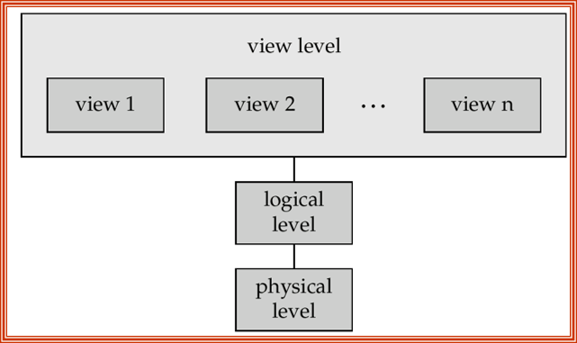
模式 (schemas) 和实例 (instances)：
- 它们之间的关系类似编程语言中的类型和变量
- 模式：不同层级的数据库结构
- 类比于编程语言中变量的类型信息
- 物理模式：物理层的数据库结构
- 逻辑模式：逻辑层的数据库结构
- 子模式 (subschema)：即视图层模式
- 实例：在特定时间点上数据库内的实际内容
- 类比程序语言的变量值
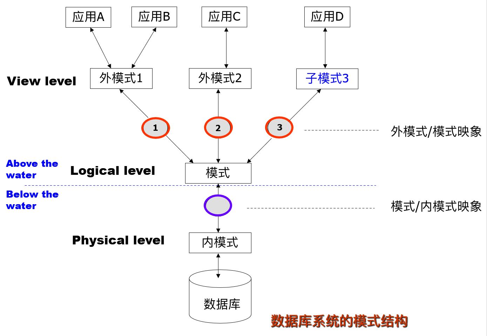
物理独立性 vs 逻辑独立性
- 独立性：修改某一层的模式定义不会影响上层的模式定义
- 物理独立性：修改物理模式不会改变逻辑模式
- 应用依赖于逻辑模式，但不关心数据的结构化和存储形式
- 这体现了 DBMS 的一大优势
- 逻辑独立性：在改变数据的逻辑结构时保护应用程序
- 由于应用依赖于逻辑模式，所以这种独立性更难实现
Data Models⚓︎
数据模型 (data model) 包括：
- 数据结构 (structures)
- 数据关系 (relationships)
- 数据语义 (semantics)
- 数据约束 (constraints)
数据模型的种类：
-
实体 - 关系 (entity-relationship, E-R) 模型
-
实体（对象
） ：用一些属性 (attributes) 来描述实体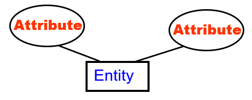 -
实体间的关系
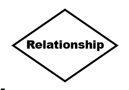 -
与数据库的概念设计相关
例子
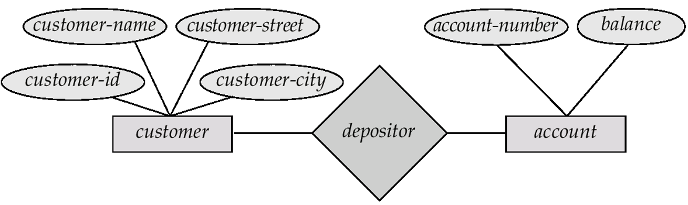 -
-
关系型模型（与数据库的逻辑设计相关）
例子
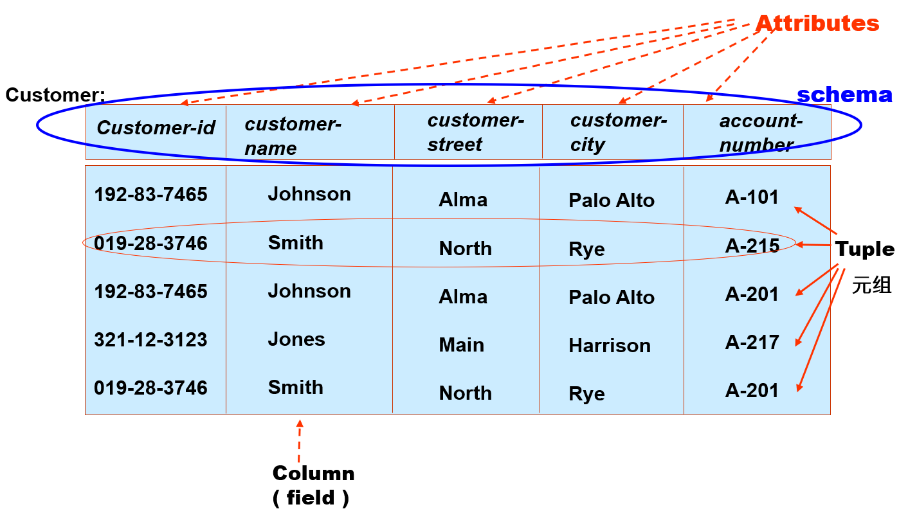 -
其他：
- 面向对象模型
- 半结构化 (semi-structured) 数据结构（比如 XML）
- 更老的模型：网状模型、层级模型
数据库设计步骤：
- 需求分析：需要什么数据、应用和操作
- 概念设计：用 E-R 模型或相似的高级数据模型，对数据进行高层级的描述
- 逻辑设计：将概念设计转换为一个 DB 模式
- 模式改善 (refinement)（规范化 (normalization)
） ：检查关系模式中的冗余和关系异常 - 物理设计：索引 (indexing)、聚类 (clustering) 和数据库调优 (tuning)
- 创建和初始化数据库、安全设计
- 加载初始数据并测试
- 识别不同的用户组及其角色
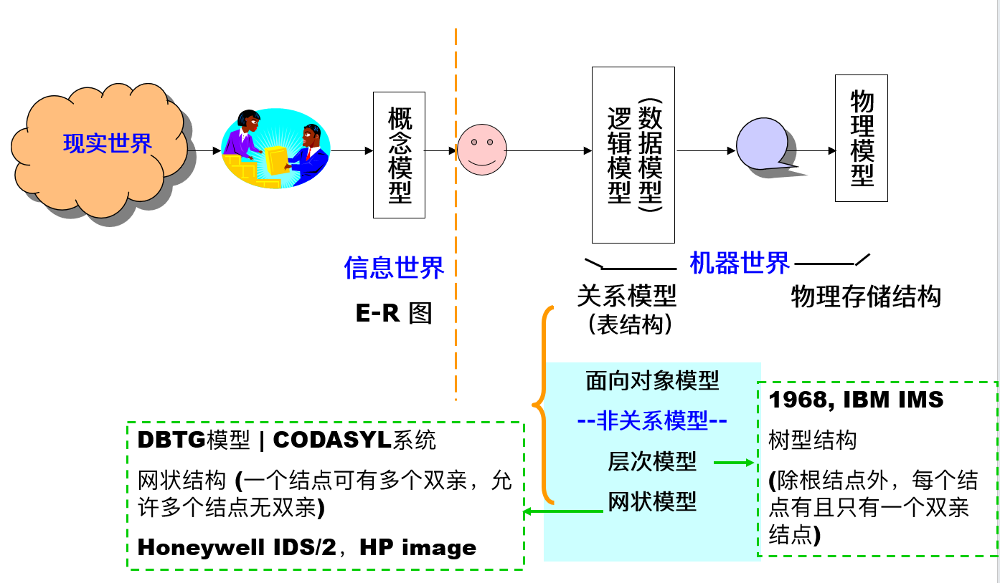
Database Language⚓︎
数据库语言有：
- 数据定义语言 (DDL)：
- 通过一组关系模式 (relational schema) 来指明数据库模式
- 还要指明存储结构、访问方法和一致性约束 (consistency constraints)
- 编译 DDL 后，得到一组表格，存在一个称为数据字典 (data dictionary) 的特殊文件内，里面包含了元数据 (metadata)。元数据包括：数据库模式、数据存储结构、访问模式和约束、统计信息、授权 (authorization)
- 数据操纵语言 (DML)：又称为查询语言 (query language)，包括检索、插入、删除、更新等操作。分为两类语言：
- 过程型 (procedural)：用户指明所需数据以及获取数据的方法，比如 C、Pascal、Java 等语言
- 非过程型 (nonprocedural)：用户只需指明数据，无需指出如何获取数据，比如 SQL、Prolog 等语言
- 数据控制语言 (DCL)
SQL（structured query language，结构化查询语言
- 直接用于交互环境
- SQL Server：查询分析器 (query analyzer)
- Oracle：SQL *Plus, Work Sheet
- MySQL：命令行客户端
- 在 ODBC（open database connectivity, 开放数据库互连
） 、JDBC（Java database connectivity, Java 数据库互连） 、嵌入式 SQL 中作为宿主语言
如何使用数据库：
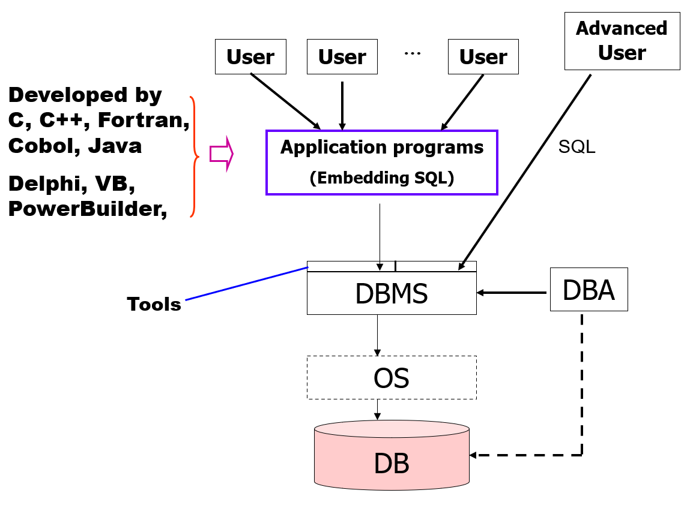
Database Users⚓︎
- 根据用户与系统的期望互动方式来区分用户
- 普通 (naive) 用户：调用用高级语言编写的持久的应用程序
- 专业用户
- 应用程序员：通过 SQL 调用与系统互动
- 富有经验的用户：使用数据库查询语言构建查询，比如在线分析处理 (OLAP)、数据挖掘等
- 专门 / 特殊用户：编写不适合传统数据处理框架的专用数据库应用程序。例如，CAD（计算机辅助设计
） 、KDB（知识数据库） 、ES（专家系统）等
Database Administrator⚓︎
数据库管理员 (database administrator, DBA)：具备对数据库和程序的中央控制权的特殊用户。
- DBA 具备该数据库的最高特权
- DBA 需要协调好数据库系统的所有活动
- DBA 控制数据库所有用户的权限 (authority)
- DBA 需要对企业信息资源和需求有较好的了解
- DBA 的责任：
- 模式、存储结构和访问方法的定义
- 模式和物理组织的调整
- 对数据访问的授权
- 日常维护：监控性能、响应要求的改变、数据库的安全（周期性备份 (backup) 数据库、故障时恢复）
Transaction Management⚓︎
- 并发使用很重要，但会可能会产生问题
- 事务 (transaction)：一组用于在数据库中执行单个逻辑功能的操作
- 事务的要求——ACID：原子性 (atomicity)、一致性 (consistency)、隔离性 (isolation)、持久性 (durability)
- 事务管理组件通过备份或恢复子系统，来确保数据库在系统或事务故障时，能够保持数据库的一致（正确）状态
- 并发控制管理器 (concurrency-control manager) 用于控制并发事务之间的互动
DBMS Structure⚓︎
- 存储管理器 (storage manager)
- 在存储在数据库（文件系统）的低级数据，和应用程序和提交到系统的查询之间提供接口 (interface)
- 负责高效存储、检索和更新数据库内的数据
- 组成部分：事务管理器、授权和完整性管理器、文件管理器、缓冲区管理器
-
查询处理器 (query processor)：组成部分为
- DDL 解释器 (interpreter)
- DML 编译器 (compiler)
-
查询处理
- 解析和翻译
-
优化
- 评估给定查询的方式有等价表达式、每个操作的不同算法等
- 通过不同方式评估查询的成本可能差异巨大
- 需要测算操作的成本
- 十分依赖于关于数据库必须维护的关系的统计信息
- 需要测算中间结果的统计信息来计算复杂表达式的成本
-
评估
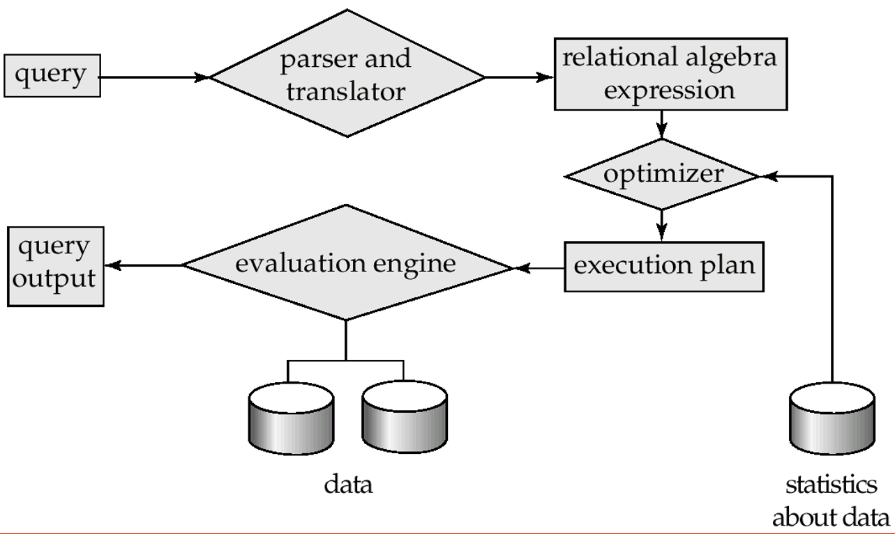
整个 DBMS 的结构图如下所示：
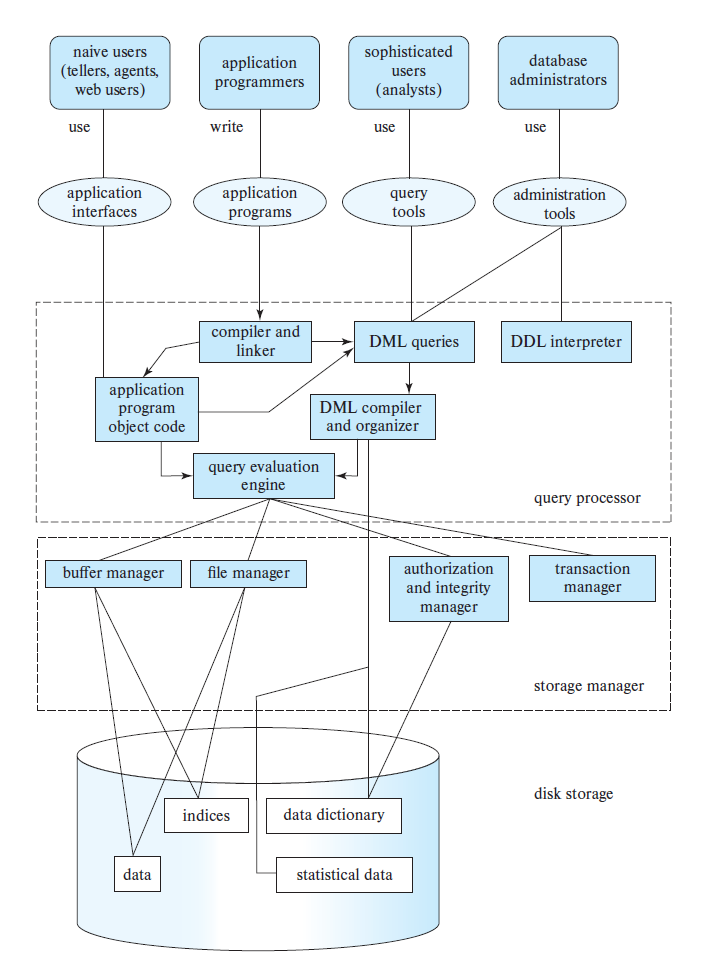
SQL 服务器的结构：
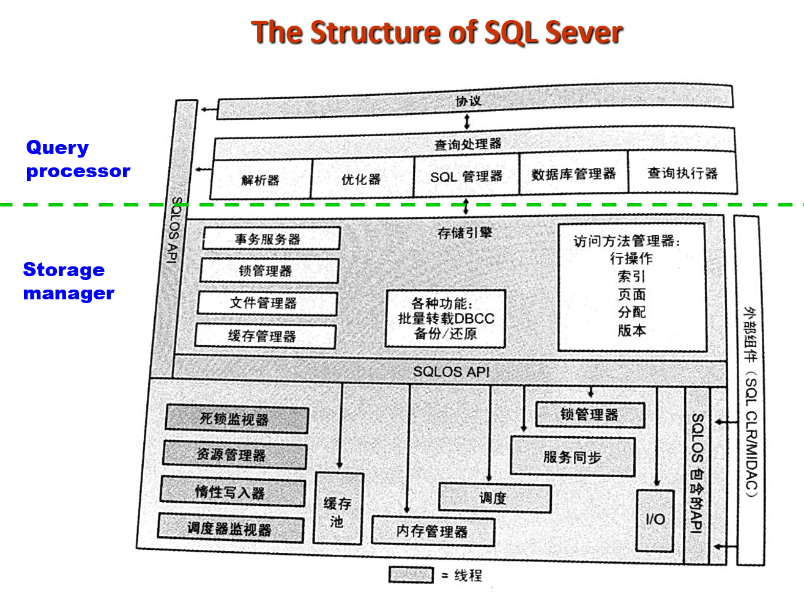
应用架构：
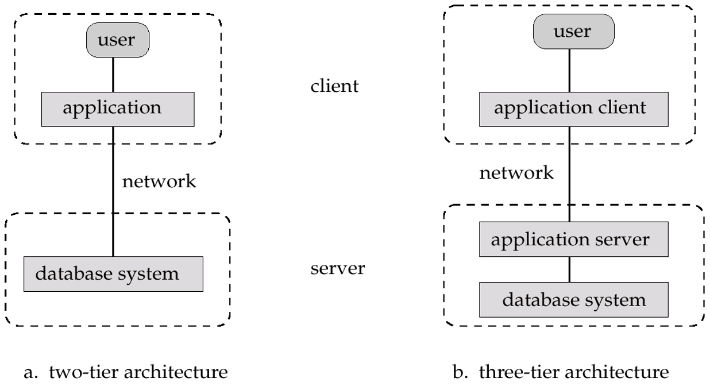
- 两级架构：客户端程序使用 ODBC/JDBC 实现数据库的通信
- 三级架构：比如基于网络的应用、使用中间件 (middleware)
评论区
如果大家有什么问题或想法，欢迎在下方留言~